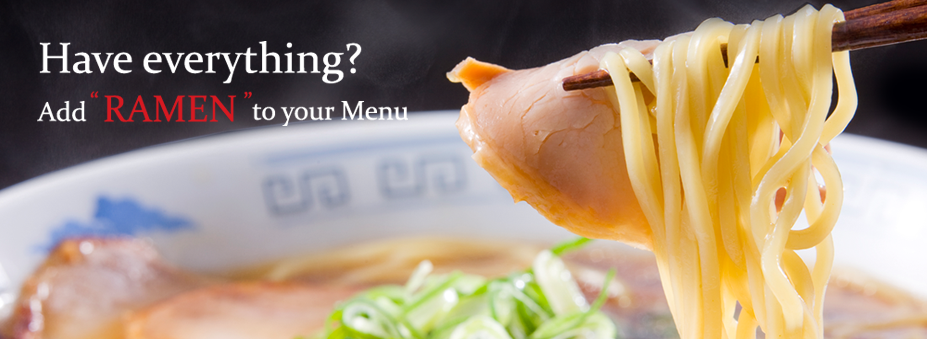
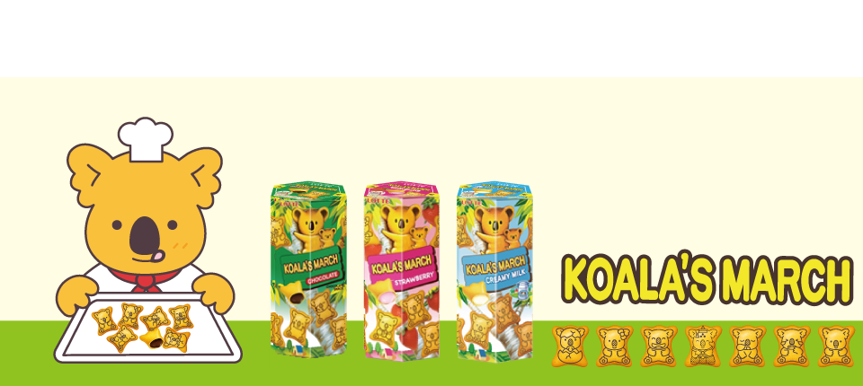
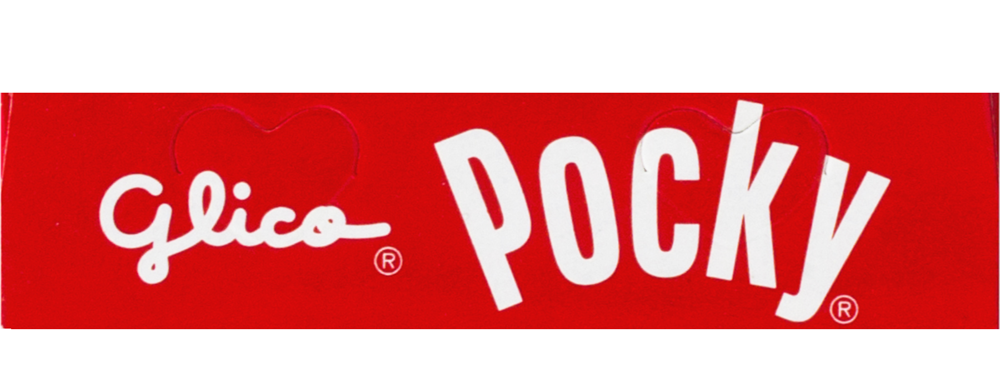
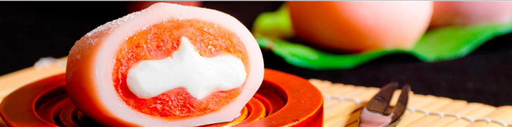

| Ramen (In box) | Roman taste really good and when you eat it, the noodle are very unique, other than the normal noodle that we see on the street, Roman are more like soft noodle. It's also one of the famous food that you should eat and buy when traveling to Japan |  |
| Lotte Koala's March biscuit (小熊餅乾) | Lotte Koala's March biscuit taste like normal cookies but inside of it there are chocolate which are very delicious. The good thing is that they are really easy to buy, it's almost every where around either Japan or Taiwan, and they are usually in the family market and 7-11. |  |
| Pocky | The reason why Pocky is so famous and really tasty is because it's easy to buy, it's very cheap and it's also really tasty, same as the Lotte Koala's March biscuit, Pocky is almost every where around either Taiwan and Japan. |  |
| Daifuku (大福) | Daifuku is also really tasty, but they are not easy to buy as pocky or Lotte Koala's March biscuit. I usually see Daifuku around Japan in the souvenir store, and I would say they are quite rare to find, if you're just randomly wondering around. |  |